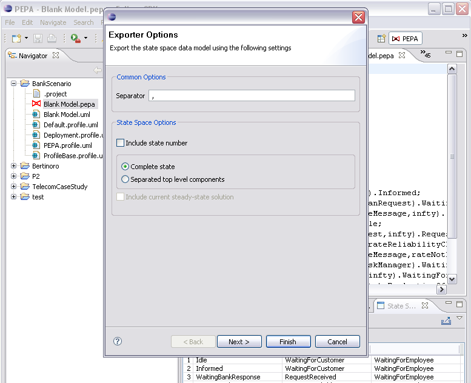

The State Space View provides a wizard to export the state space into a csv (comma-separated values) files. To open the wizard, click the export button in the top right corner of the state space view.
The wizard will produce two files, the generator matrix and the state space in the form of an ordered list of strings. The separator character will be used to delimit the values in the generator matrix files. If the Include state number option is checked, the state number will be prepended to state. The state can be represented fully or as an array of separated top level components. Moreover, if the steady-state solution is available, the steady state probability can be included in the state space file. The values of the state space files will be delimited using the separator character of the generator matrix.
Click Next to select the destination for the target files. The wizard doesn't allow to overwrite existing files.